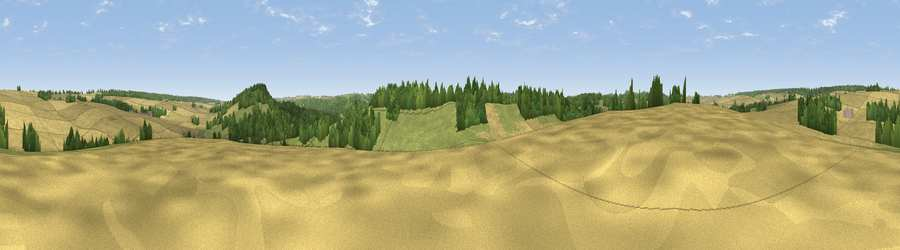

Viewpoint near Teffont Magna
#37853 in England · top 75% of its area beats it · near Teffont MagnaThe view, rendered

A 360° render of this exact spot computed from the terrain model, tree cover and land cover — summer colours, afternoon light, calibrated against photographs of famous viewpoints. Real trees, hedges and buildings will differ in detail.
The panorama
Grey silhouette: terrain skyline in each direction (720 bearings, Earth curvature and refraction included). Dashed green: skyline with trees (+15 m) and buildings (+8 m) as obstacles. Blue strip: how far the ground is visible on each bearing.
Where the view opens
Wedge length = distance to the farthest visible ground on that bearing (vegetation-aware). Rings at 10, 25 and 50 km.
What fills the view
49% cropland · 26% woodland · 25% grassland
Angular shares of the visible panorama (visual magnitude), not map area. Landscape diversity 0.46 (0–1 Shannon).
Key numbers
More beautiful places nearby
The staircase of upgrades: each row has a higher view potential than everything closer. Driving times are estimates from straight-line distance, calibrated against real road routing — check an actual route before setting out.
| Place | Direction | Drive | Score |
|---|---|---|---|
| Viewpoint near Teffont Evias | SSE · 1 km | ~2 min | 44.3 |
| Viewpoint near Teffont Evias | ESE · 2 km | ~5 min | 53.2 |
| West Hill | NE · 4 km | ~9 min | 59.0 |
| Chiselbury Hill | SE · 6 km | ~12 min | 59.2 |
| Swallowcliffe Down | S · 7 km | ~15 min | 59.8 |
| Hydon Hill | ESE · 7 km | ~15 min | 61.2 |
| Viewpoint near Fonthill Gifford | WSW · 7 km | ~15 min | 64.2 |
| Haddon Hill | W · 11 km | ~20 min | 64.6 |
51.09113, -2.02886 · source: screening · position refined by local search. Computed location — check access rights before visiting.